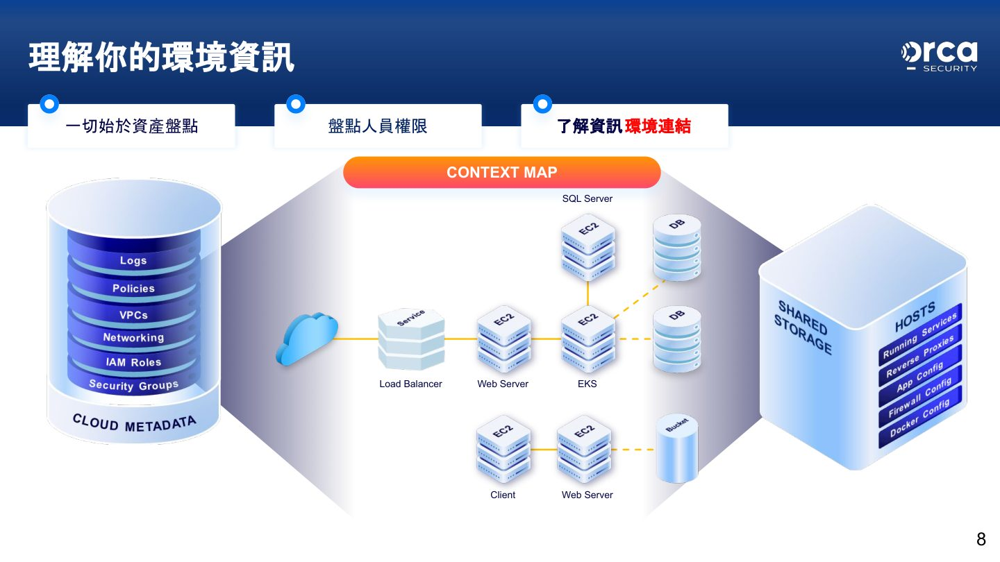
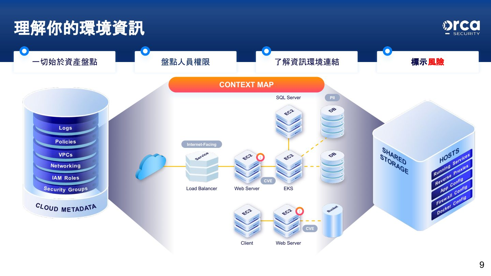
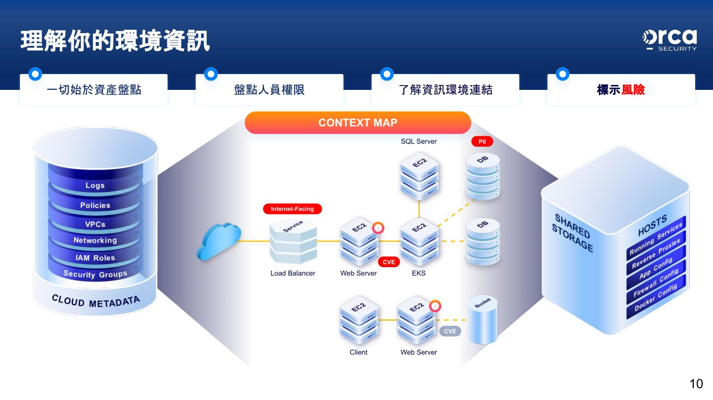
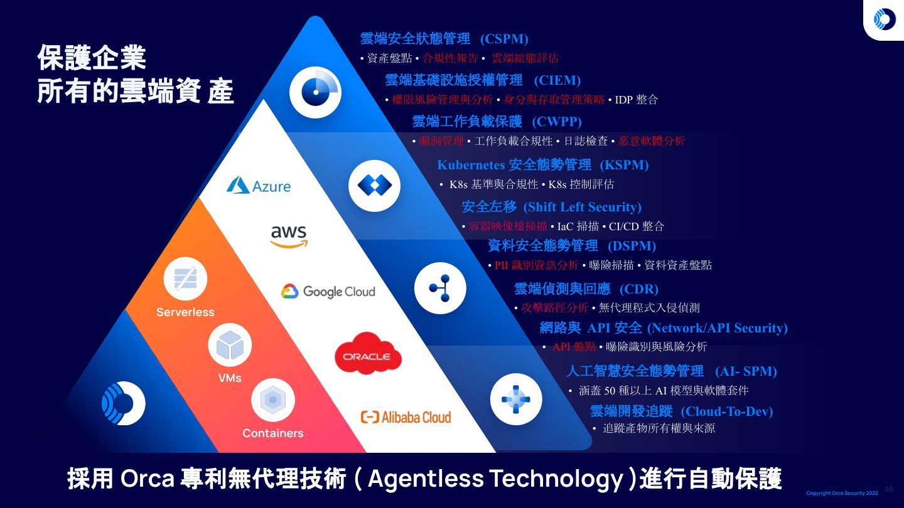

摘要
本場演講由 Orca Security 講者 CJ Kuo 介紹無代理雲端安全架構如何解決傳統方法在部署、風險排序與合規上的限制。透過專利 Agentless SideScanning 技術，Orca 能在無需安裝 Agent 的情況下，於 24 小時內完成雲端資產的資安態勢盤點；並結合 Context Map 建立完整的資產與風險視覺化，再以 AI 助理協助排定修復優先順序、產生具體修復步驟，甚至跨雲識別橫向風險，並透過 MCP 伺服器讓使用者以自然語言查詢與操作雲端安全資料。
重點整理
- Orca 專利技術 Agentless SideScanning 無須安裝 Agent 或掃描器，即可提供完整的 CSPM、CWPP、CIEM 需求，並在 24 小時內盤點雲端資產安全問題
- 透過雲端快照方式進行掃描（讀取後即刪除快照），對工作環境達到 100% 無影響
- Context Map 以資產盤點、權限盤點、環境連結到風險標示的漸進步驟，建立完整雲端環境視覺化地圖
- AI 助理可學習使用模式、排定風險優先順序並自動化執行任務，針對 CVE 漏洞直接產生詳細的準備、升級、驗證、回滾與合規文件步驟
- Orca 任務化功能透過優先處理根本原因，允許一次性關閉多個相關聯的告警，例如修補已部署映像檔即可關閉 40 個漏洞與 15 個告警
重點圖片／架構圖




雲端安全的挑戰與傳統方法的限制
講者指出雲端環境不斷變化，使得風險優先排序變得困難，同時企業還需應對合規問題與雲地及多雲環境間的技能落差。傳統方法的限制包括：無法輕鬆部署到所有地方、系統效能大幅下降、擁有成本（TCO）高昂、多項資安產品各自運作導致問題難以持續處理、告警疲乏，以及多雲環境難以一致化管理與 CVE 漏洞修補的困難。
Agentless SideScanning 專利技術
Orca 作為無代理雲端安全的先驅，透過專利技術 Agentless SideScanning，無須安裝 Agent 或掃描器，即可提供完整的雲端安全態勢管理（CSPM）、雲端工作負載保護平台（CWPP）與雲端基礎設施權限管理（CIEM）。其運作方式是對服務當下的磁碟進行快照、讀取位元與字元後即刪除快照，每次掃描皆使用獨立且位於環境之外的掃描器，因此對工作環境達到 100% 無影響，且能在 24 小時內完成雲端資產安全問題的盤點。
Context Map 資產盤點與風險視覺化
Orca 的分析從資產盤點開始，依序建立 Context Map：先盤點人員權限，再了解資訊環境連結（如 Load Balancer、Web Server、EKS、SQL Server 等元件之間的關係），最後在地圖上標示風險，例如對外暴露服務（Internet-Facing）、CVE 漏洞與含有個資（PII）的資源，讓使用者能全面理解其雲端環境資訊。
AI 驅動的快速修補與跨雲風險識別
當 CVE 出現時，Orca AI 助理會學習使用模式、排定風險優先順序並自動化執行任務，並能直接產生詳盡的修復步驟，例如針對 AWS VM 上 Apache Tomcat 的遠端程式碼執行漏洞（CVE-2025-24813），提供備份、升級、驗證、回滾與合規文件記錄等完整流程。此外，Orca 也能跨雲（如 GCP 與 AWS）辨識橫向風險，例如在 GCP 服務上發現可存取其他主機的 SSH Key 與 AWS 金鑰，並自動拼湊出可能造成外洩的路徑與風險。
MCP 伺服器整合與任務化修復
透過 Orca 遠端 MCP 伺服器，使用者可以自然語言無縫查詢並操作雲端安全資料，並建立在 Orca 內運行的 AI Agent 監控自動化，從持續監控延伸到事件分類。此外，Orca 任務化功能提供高投資報酬率、循序漸進的修復任務，透過優先處理根本原因並允許一次性關閉多個相關聯告警來降低風險，例如修補已部署的映像檔可關閉 40 個漏洞與 15 個告警，或透過修復錯誤設定的 Terraform 關閉 30 個告警。Orca 同時支援 ISO、NIST、GDPR、PCI DSS 等多項國際標準與地區法規的合規框架對照。